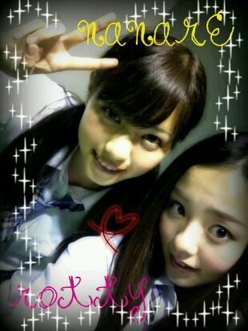

ほっほぉ〜い ☆ )))
ろってぃーでぇす^^
生誕祭の時の浴衣です♪
すごい爽やかな感じの
柄と色合いで
すごく気に入りました*^ω^*
コメントや握手会で
浴衣似合ってたよ♪って
言われて
めちゃくちゃ
嬉しい気持ちでした〃ω〃
...
そしてそしてっ//
今日は 大阪で★全国握手会★
ヤフー !!
さーいこ〜う。・ω・
大阪w,
ただいまーーーっ!!!★☆★笑
地元だからこそ
いつも何か緊張しちゃう...。>ω<
ミニライブの方は
何か変に緊張しちゃって*・ω・*
でも最高に楽しかった〃ε〃
握手会は皆様と話せて
すごく幸せな時間でした♪
ありがとうございます。
今日は
ななせとまひろのペアでしたっ))
同じ大阪やっ*^^*))

めちゃくちゃ
楽しかったのっ(⌒‐⌒)
やっぱ うん,そだな・ω・))
うん。サードの全握,個握が
まちどっしー・ω・´*))笑
何か本当に
たくさんの元気を
私に与えてくださって
ありがとう*・ω・*
大阪に前日入りしてて
前日の晩,
メンバー全員で
難波のお好み焼き屋★に
行ったの=・ω・=
久しぶりのお好み焼き屋で
テンションあがたーー。♪
ちなみにホテルには
あみ♪と泊まりました^^
とゆうことでっ
本当にありがとうございました^^
そろそろおやすみだぁ(´ω`)
皆様おやすみなさい♪
また更新します^^
のし。